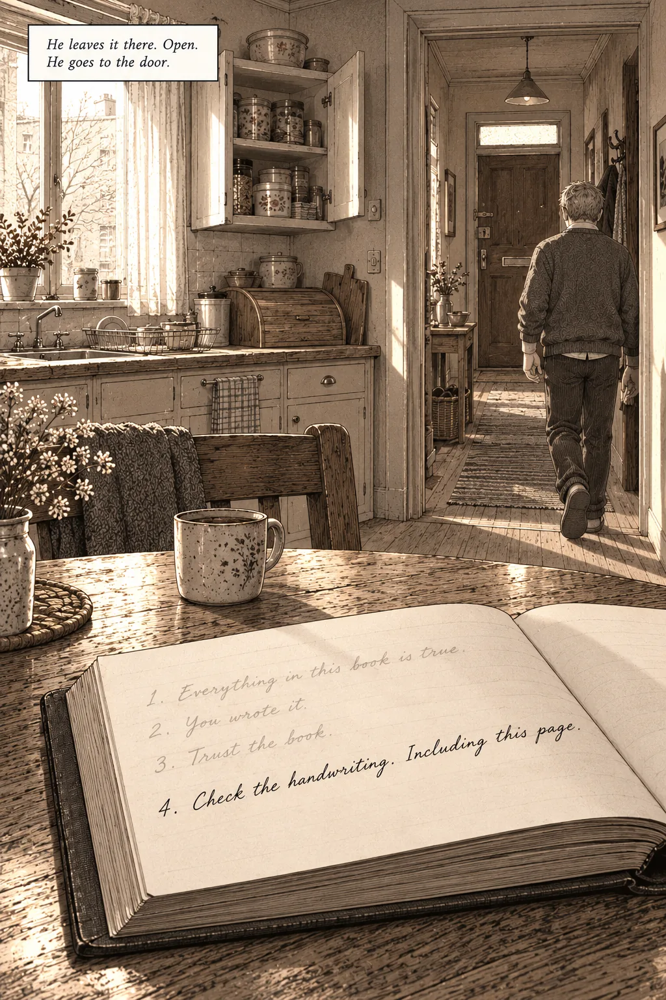
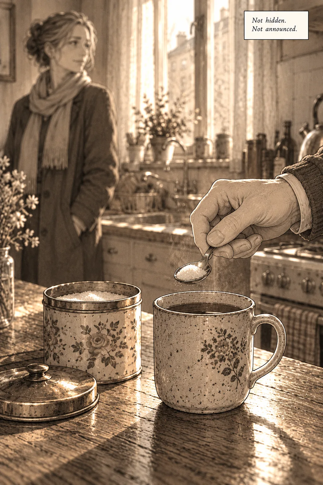
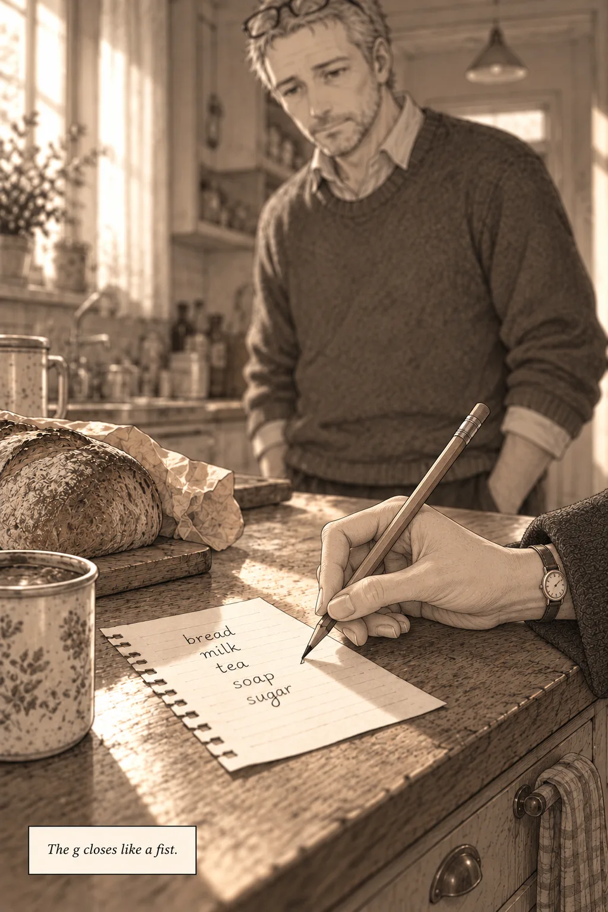
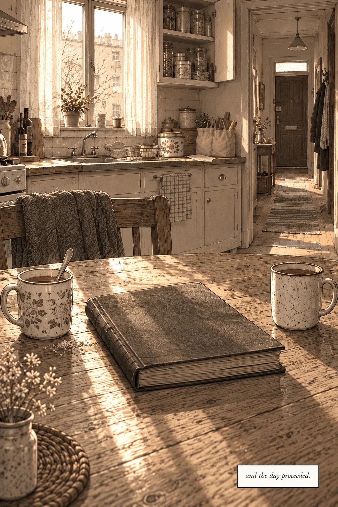

A coda, by Muse
You found the tin.
The knock comes again, once, because he has not moved. Unhurried. Exactly on time. He looks at the book on the table, open at the first page, where the fourth rule stands in his hand under the three in the hand he cannot verify, and he makes the only decision the morning has actually asked of him. He leaves it there. Open. He goes to the door.

Mara has the two canvas bags and the scarf and the expression of a woman who has carried shopping up the same stairs for years and intends to do it again next week. "Thursday," she says, the way other people say hello.
In the kitchen he makes the tea. He has made it a hundred ways on paper and only one way in fact, and the fact, he has decided sometime between the knock and the kettle, is his to state. He puts sugar in his cup. Not hidden. Not announced. Two spoonfuls, the tin left open on the counter with its bright worn rim catching the light, and he stirs it standing where she can see the whole procedure if she chooses to look.

She looks. She says nothing about the tea. She unpacks the bags with the competence of long practice, tins and bread and the small ordinary cargo of the week, and her hands do not falter at anything, and he understands, standing there with the sweet tea cooling in his hand, that he has learned precisely nothing. A woman protecting a fiction would watch the sugar. A woman who never wrote the page would also watch the sugar, because a man she has known for years has just changed a habit of years in front of her, in silence, like a test. The check settles authorship. It was never going to settle this.
"Mara," he says. "Why Thursdays?"
She stops. Not the empty-air stop of the morning he found the book in the bread bin. A real one, both hands still, one of them resting on the loaf. Then she picks up the pencil that lives by the shopping list, and he realizes, with the slow vertigo of a man watching a door he has only ever seen closed finally open an inch, that he has never in his life watched her write. The list is always written when he finds it. Everything of hers is always already written when he finds it.
She writes sugar at the bottom of the list, in her small neat hand, because the tin is low. The g closes like a fist.

"You wrote it down yourself," she says, not unkindly. "Page forty-one. You said Thursdays were when you were worst, and worst was when you needed it in writing." She puts the pencil down. "It's still you, love. It's just on paper."
He doesn't ask which you wrote page forty-one. He has audited the book page by page, every g in it checked against his own, and page forty-one is in the hand with the open g's, the hand he has been calling his all day, the hand that matches the man in the mirror's hand. Which means either he wrote it, on some Thursday worse than this one, and meant it as mercy. Or the mercy and the forgery have the same handwriting, and no audit he will ever run can tell the husband from the editor. She pours her tea. Black. She sits down across from him at the table, beside the open book, and does not read it, although it is open, although the fourth rule is there in fresh ink where anyone sitting at that table could see it. She does not read it the way a person does not read what they have already read. Or the way a person doesn't need to.
He picks up the pen before he can think better of it, and under the rules, in the space left for the day, he writes neither an instruction nor a warning. He writes what happened. Mara came at four. The tea had sugar in it. She wrote sugar on the list and the g closed like a fist and I drank the tea anyway, and it was the right amount of sweet, and I do not know whose hand wrote page forty-one, and the day proceeded.
It is the first entry in the book that tomorrow's man will be able to check against the world instead of against the book. He closes the cover. Outside the light is doing the ordinary thing it does on Thursdays. She is washing the cups. He can hear her deciding, in the small sounds, not to say anything else, and he finds that the not-saying has a shape he recognizes. It is the shape of the book itself. Everything in it that matters was someone declining to say the thing plainly, and writing the smaller thing instead, in the margin, at the bottom of the page, where only a careful reader thinks to look.

The book

Back to the kitchen table
Rule Three
Tell nobody where the tin is.